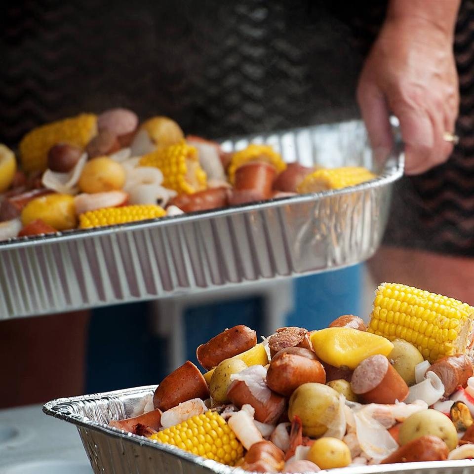

Dave's Low Country Boil

Description
A recipe that is famous to Georgia and South Carolina
The Dave's Low Country Boil is a recipe
that has the characteristics of an all-you-can-eat-buffet
Ingredients
- 1 tablespoon seafood seasoning (such as Old Bay®), or to taste
- 5 pounds new potatoes
- 3 (16 ounce) packages cooked kielbasa sausage, cut into 1 inch pieces
- 8 ears fresh corn, husks and silks removed
- 5 pounds whole crab, broken into pieces
- 4 pounds fresh shrimp, peeled and deveined
Steps
- Heat a large pot of water over an outdoor cooker, or medium-high heat indoors. Add Old Bay Seasoning to taste, and bring to a boil. Add potatoes, and sausage, and cook for about 10 minutes. Add the corn and crab; cook for another 5 minutes, then add the shrimp when everything else is almost done, and cook for another 3 or 4 minutes.
- Drain off the water and pour the contents out onto a picnic table covered with newspaper. Grab a paper plate and a beer and enjoy!
Home Page